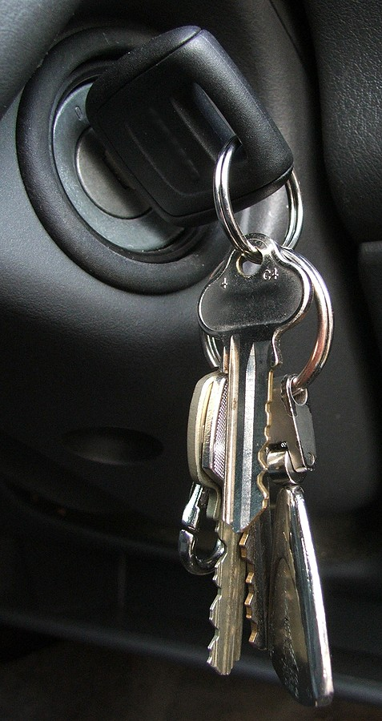

The best service for your key
About us
Established since 1999 we are the only economic choice for your vehicle in case of damage of systems like Adblue, Dpf, EGR and Flap, which require high cost of repair and maintenance. The service is quick without side effect for your vehicle. We offer guarantee due to our professional and modern programming tools, without affecting ECU. Nearly 100 clients are satisifed every day with our service.
DPF/EGR/adBlue
We can disable DPF, EGR and adBlue through a quick and reliable service. The AdBlue system can be electrically disabled as well as the associated dashboards lights and warning messages. The solutions of DPF include regeneration, replacement and recalibration. Through clogging with carbon deposits, we support the ERG valves from causing any fail or stick.
Ecu Clone & Chip Tuning
We can duplicate the existing engine computer information onto a replacement Ecu. We adjust various parameters like fuel pressure, boost pressure ignition advance and throttle pedal control amongst others to release the actual performance from the engine. We also change or modify an erasable memory chip to achieve superior performance.
Repair & Program
We reprogram a preset blank chip and put into a new car key so that it matches the current settings of your vehicle. We provide professional level diagnostics on almost every vehicle. We also do coding and engine remapping using the appropriate modifications.


